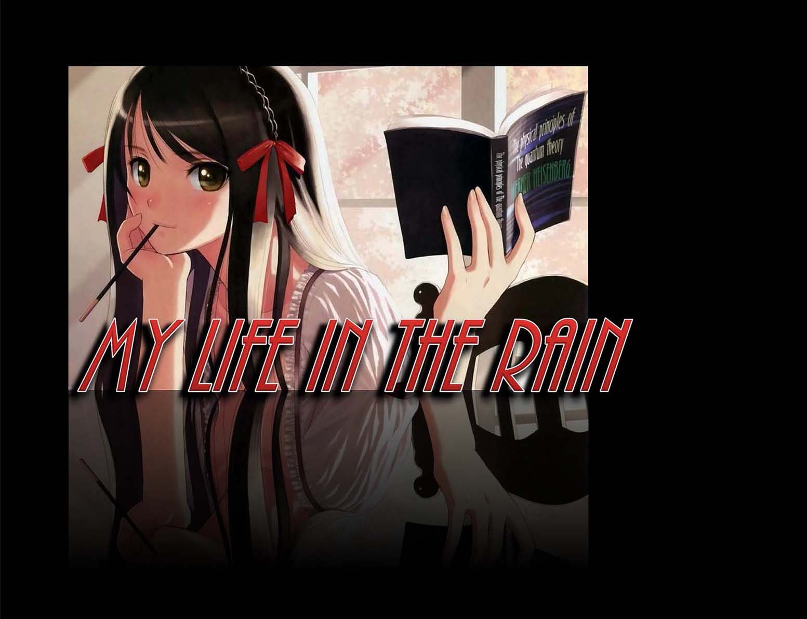
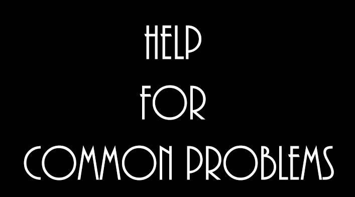

| Contact Me. |
|
|  |  |
| Home | Back | Forward |
|
Hello, fellow internet users!
This is my blog, where (hopefully) I’ll be able to help out with any problems you might have. I’ve tried to share advice for common problems, but if you want to you can just tell me your problem – I will try to help the best I can. I will be posting stuff about once every two weeks, so don’t worry – you won’t have too wait long for my wise advice! Before ya’ll ask, let me explain why my blog is called “My Life in the Rain.” Basically, one of my favorite sayings is by Vivian Greene, “Life is not about waiting for the storm to pass, it’s learning how to dance in the rain.” I was thinking about that when I decided to start a blog and, voila! As for my name, Calily – well, let’s see if you guys can guess why that is what it is. |
29th July, 2013
HOW TO BE HAPPY!
Hello, again, my fellow Earthlings! Today I will share with you … the secret to being happy. A very smart guy, (Aristotle, to be exact … ) once said that “Happiness depends upon ourselves.” Well, he was right. You can’t make someone happy; you can only make yourself happy. So here’s how to go about bringing a smile to your face!
· 1. Be fulfilled. Almost every adult I know, when they talk about being happy, they don’t just say “I want to be happy.” They say, “I want to be happy and fulfilled in life.” Well, that just means that you’ve gotta make the most of things, right? So start looking at the glass as half full. Sure, you might have just spilled Coke on your new clothes, your computer is soooo annoyingly slow, and you could cheerily punch your drunk college-age neighbors. But maybe a cute guy or girl smiled at you, or maybe it’s your favorite kind of weather today – and at least that’s something to be glad about, right?
· 2. Get into the habit of smiling. You won’t BELIEVE how many people don’t smile enough, and most of them have plenty to smile about! You’ve got a roof over your head, food in your belly, and you’re reading the best blog ever, right? So what’ve you got to be grumbling over?
· 3. Be kind to people. Not only will this be the good, right thing to do, but they will be nicer to you, and you will have plenty of friends in no time!
· 4. Find your inner peace. Accept that some parts of life just plain suck, like the fact you have cancer, or your parents died in a car crash. Accept them, and then move on. The past is the past, and you can’t go back to it. All you can really do is make the best of now.
· 5. Eat ice cream (sorry, I had to add this one in here … )!! Ice cream makes everything better. Unless it’s winter (then hot cocoa will do the trick) or you’re lactose intolerant like Leonard in The Big Bang Theory. (In which case, you can just play Minecraft).
· 6. Look after yourself. No one can be properly cheerful when they are severely obese, dressed in the same shirt and shorts for a month, have drugs pumping through them, etc. You’ve only got one bod, and if you don’t look after it, who will?
· 7. Finally … realize it’s okay to be sad and mad sometimes. It’s normal, and it makes the happy moments even more valuable. Just make sure the negative emotions don’t overwhelm you and your life, and you’re golden.
Well, there you have it: the secrets I’ve discovered on how to be happy. Of course, you might have to alter these slightly to fit with your life, but you get the general concept, don’t you? Well, hate to break up the party, but I’ve got some serious friendship drama going on here. Sigh. Charles Dickens once wrote that, “It was the best of times, it was the worst of times.” ’Course, he was talking about the French Revolution, but the same could be said about the teenage years!
Ciao!